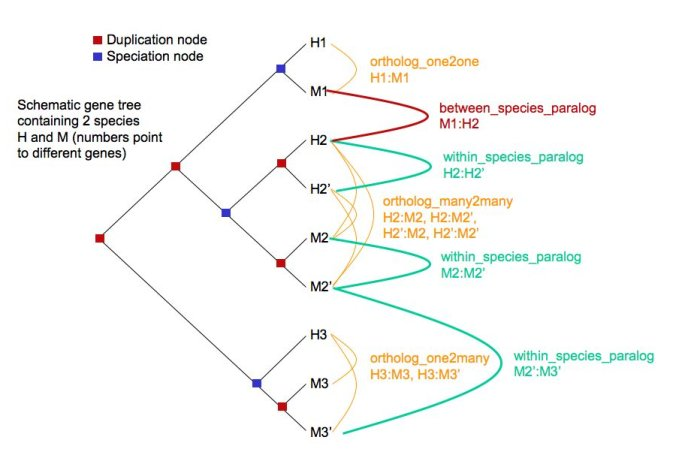
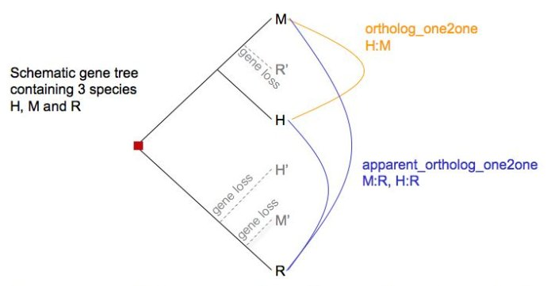

Gene Orthology/Paralogy prediction method
The gene orthology and paralogy predictions are generated by a pipeline
where maximum likelihood phylogenetic gene trees (generated by NJTREE)
play a central role. They aim to represent the evolutionary history of
gene families, i.e. genes that diverged from a common ancestor. These
gene trees reconciled with their species tree (using RAP) have their
internal nodes annotated to distinguish duplication or speciation events.
There is a clear concordance with reciprocal best approaches in the
simple case of unique orthologous genes. However, the gene tree
pipeline is able to find more complex one-to-many and many-to-many
relations. This for instance significantly raises the number of Teleost
(bony fish) to Mammal orthologs and has even more dramatic effects on
Fly/Mammal or Worm/Mammal orthologous gene predictions. Using this
approach, we are also able to "time" duplication events which produce
paralogs by
identifying the most recent common ancestor (=taxonomy level) for a
given
internal node of the tree.
The gene orthology and paralogy prediction pipeline has 7 basic steps:
1. Load the longest translation of each gene from all species used in
Ensembl
2. run WUBlastp+SmithWaterman of every gene against every other (both
self and non-self species) in a genome-wise manner
3. Build a graph of gene relations based on Best Reciprocal Hits
(BRH1) and
Best Score Ratio (BSR)2 values
4. Extract the connected components (=single linkage clusters), each
cluster
representing a gene family.
5. For each cluster, build a multiple alignment based on the
protein sequences using MUSCLE3
6. For each aligned cluster, build a phylogenetic tree using
NJTREE4 using the CDS sequences of the multiple alignment.
An rooted tree with internal duplication tags is obtained at this
stage, reconciling it with the species tree in
'ensembl-compara/scripts/pipeline/species_tree_njtree.taxon_id.nh'.
7. From each gene tree, infer gene pairwise relations of orthology and
paralogy types.
Orthologues : any gene pairwise relation where the ancestor node is a
speciation event.
We predict several descriptions of orthologues.
ortholog_one2one
ortholog_one2many
ortholog_many2many
apparent_ortholog_one2one (is a special case, see below)
Paralogues : any gene pairwise relation where the ancestor node is a
duplication event.
We predict several descriptions of paralogues.
within_species_paralog
between_species_paralog

A within_species_paralog corresponds to a relation between 2
genes of the SAME species where the ancestor node
has been labelled as a duplication node e.g. H2:H2', M2:M2' but does
not necessarily mean that the duplication event
has occurred in this species only. For example, M2':M3' are
also within_species_paralog but the duplication event has occurred
in the common ancestor between species H and species M. If H is human
and M Mouse, the taxonomy level "times" the duplication
event to the ancestor of "Euarchontoglires".
A between_species_paralog corresponds to a relation between 2
genes of DIFFERENT species where the ancestor node
has been labelled as a duplication node e.g. M1:H2 or M1:H3.
Special cases of between_species_paralog can be singled out where they
can be characterised as one2one relations. Such cases are then relabelled
apparent_ortholog_one2one. Apparent orthologs can be the results of real
duplication followed
by gene loss (as shown in the picture below), but can also be the results of a wrong gene tree topology
and wrong duplication node labelling.

Notes and References
1 BRH: Best Reciprocal Hit. When a query gene translation has an
unambiguous 'best' hit to a target translation, and that particular
target translation has an unambiguous 'best' hit back to the starting
query translation. The discrimination function for 'best' is a simple
sort of blastp >score, %identity,
>%positivity.
2 BSR: Blast Score Ratio. When 2 proteins P1 and P2 are compared,
BSR=scoreP1P2/max(self-scoreP1 or self-scoreP2). The default threshold
used in the initial clustering step is 0.33.
3 Edgar RC "MUSCLE: a multiple sequence alignment method with reduced time and space complexity" BMC Bioinformatics 2004 Aug 19;5:113.
4 Li H et al. NJTREE: http://treesoft.sourceforge.net/njtree.shtml. Manuscript in preparation.